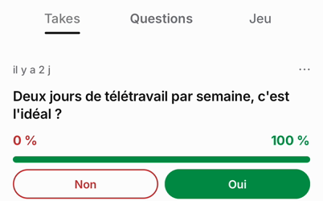
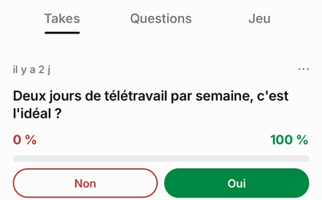
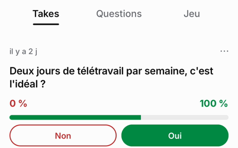

Banc de fluidité, en JS de production
Avant = b772ef5959 (hier soir) · après = 5512a99b18 (lot 1 fusionné) · 3 passages avant, 3 après, en alternance · 02/10/2026, passages filmés de 17:03:54 à 17:34:32
- Onglets du profil : le trait passe sous l'onglet touché en 21 à 22 ms, contre 496 à 624 ms avant. X le fait dans l'image du toucher (17 ms).
- Thèmes d'Explorer : le contenu est posé en 19 à 26 ms, contre 283 à 336 ms avant.
- Retour sur Takes : la page arrive tout de suite, mais la barre de résultat du premier take se vidait puis se remplissait de nouveau, jusqu'à environ 800 ms. Avant le lot 1 aussi. La cause est trouvée, le correctif est écrit pour le lot 2 (plus bas).
- Lancers de l'Accueil : pas de différence nette entre les deux côtés, et le lot 1 ne touchait pas le fil. Le 3e lancer de chaque passage perd 9 à 13 images à son départ, avec un à-coup, des deux côtés : c'est à creuser.
Le même toucher, avant et après
Takes → Questions sur le profil, ralenti deux fois, calé sur l'instant où l'app reçoit le toucher (tour 2 d'AVANT-3 et d'APRÈS-2).
Touchers d'onglets
Millisecondes depuis l'instant où l'app reçoit le toucher, p50 / p75, tours 2 à 5 de chaque passage mis en commun. Le verdict juge la colonne « après » face à la cible de X. « À une image près » : dans l'incertitude de la mesure (17 ms).
| Mesure | Avant | Après | Cible | Après |
|---|---|---|---|---|
| Profil : Takes → Questions | ||||
| Premier changement visible | -31 / -24 | -31 / -27 | retour visuel ≤ 100 ms (Apple : à 250 ms, ce n'est plus instantané) | tenu |
| Trait sous l'onglet visé | 496 / 505 | 21 / 24 | dans l'image du toucher (une image : 17 ms) | à une image près |
| Contenu posé | 594 / 602 | 21 / 24 | < 500 ms au p75 | tenu |
| Profil : Questions → Takes | ||||
| Premier changement visible | -34 / -32 | -36 / -31 | retour visuel ≤ 100 ms (Apple : à 250 ms, ce n'est plus instantané) | tenu |
| Trait sous l'onglet visé | 590 / 634 | 22 / 25 | dans l'image du toucher (une image : 17 ms) | à une image près |
| Contenu posé | 697 / 735 | 606 / 628 | < 500 ms au p75 | manqué |
| Profil : Takes → Jeu | ||||
| Premier changement visible | -29 / -26 | -31 / -26 | retour visuel ≤ 100 ms (Apple : à 250 ms, ce n'est plus instantané) | tenu |
| Trait sous l'onglet visé | 624 / 685 | 22 / 23 | dans l'image du toucher (une image : 17 ms) | à une image près |
| Contenu qui arrive | 623 / 666 | 22 / 23 | ouverture d'écran < 500 ms au p75 | tenu |
| Contenu posé | 689 / 737 | 22 / 23 | < 500 ms au p75 | tenu |
| Profil : Jeu → Takes | ||||
| Premier changement visible | -28 / -23 | -37 / -28 | retour visuel ≤ 100 ms (Apple : à 250 ms, ce n'est plus instantané) | tenu |
| Trait sous l'onglet visé | 564 / 608 | 21 / 25 | dans l'image du toucher (une image : 17 ms) | à une image près |
| Contenu qui arrive | 546 / 576 | 21 / 25 | ouverture d'écran < 500 ms au p75 | tenu |
| Contenu posé | 639 / 694 | 570 / 590 | < 500 ms au p75 | manqué |
| Explorer : Tendances → Actu | ||||
| Premier changement visible | 76 / 81 | 19 / 24 | retour visuel ≤ 100 ms (Apple : à 250 ms, ce n'est plus instantané) | tenu |
| Trait sous l'onglet visé | 105 / 107 | 19 / 24 | dans l'image du toucher (une image : 17 ms) | à une image près |
| Contenu posé | 283 / 290 | 19 / 24 | < 500 ms au p75 | tenu |
| Explorer : Actu → Tendances | ||||
| Premier changement visible | 21 / 24 | 26 / 31 | retour visuel ≤ 100 ms (Apple : à 250 ms, ce n'est plus instantané) | tenu |
| Trait sous l'onglet visé | 138 / 156 | 26 / 31 | dans l'image du toucher (une image : 17 ms) | à une image près |
| Contenu posé | 336 / 343 | 26 / 31 | < 500 ms au p75 | tenu |
« Premier changement » est négatif parce que l'onglet s'assombrit dès l'appui du doigt, avant le relâché qui sert d'origine. Les deux « manqué » du retour sur Takes viennent de la barre rejouée, expliquée plus bas : la page, elle, est là en 21 ms.
Lancers dans le fil de l'Accueil
Les 800 premières millisecondes de chaque lancer, comptées image par image (9 lancers avant, 9 après, médiane ; à-coups : le pire).
| Mesure | Avant | Après | Cible | Après |
|---|---|---|---|---|
| Images par seconde | 56,1 | 57,1 | 60 sur cet écran (une image toutes les 16,7 ms) | — |
| Images perdues (%) | 6,2 | 4,2 | moins de 1 % d'images perdues | manqué |
| À-coups de plus de 50 ms | 1 | 1 | aucun à-coup > 50 ms | manqué |
| Saccades (ms par seconde) | 62,4 | 41,4 | saccades < 5 ms/s (5 à 10 à examiner, > 10 critique) | manqué |
Ces lancers ne sont pas au niveau de X sur ce simulateur. Le natif y tourne en Debug. Le verdict se fera sur un iPhone, avec le build.
Ce que le banc a trouvé : la barre rejouée



- Cause : le « tirer pour rafraîchir » n'était donné qu'à la page affichée. Sur iPhone, React Native le place juste avant le contenu de la liste. Une page qui le gagne ou le perd reconstruit donc toutes ses rangées, et la barre d'un take rejoue son animation d'arrivée. À chaque changement d'onglet, les deux pages concernées étaient reconstruites. Le mot de l'onglet passait en gras à +398 ms, sans doute pour la même raison.
- Où : les onglets du profil (le sien et celui des autres) et les filtres des Notifications. Sur Android, la liste entière était reconstruite, et elle perdait sa position.
- Correctif : chaque page garde son contrôle, et celles d'à côté en tiennent une copie éteinte. Il y a aussi un test qui vérifie qu'un toucher ne reconstruit aucune rangée, et un garde-fou contre le retour du motif. C'est la première PR du lot 2 : elle sera fusionnée dès que ses tests et sa CI seront verts.
Comment c'est mesuré
- Le simulateur d'Adam (iPhone, iOS 26.5), le client de dev (natif en Debug), et le JS de production servi par Metro :
--no-dev --minify, sans chargement en morceaux (EXPO_NO_METRO_LAZY=1). Les valeurs absolues sont un peu pessimistes. L'écart entre avant et après tient. - Chaque passage : relance à froid, profil d'Ava sur la base locale (données de démo), puis les mêmes 48 gestes par script, filmés à l'écran. Après chaque passage, une bascule de version.
- L'heure de chaque toucher vient de l'outil de pilotage. Son retard est retiré grâce à 5 touchers de la barre d'état, auxquels iOS répond sans le JS. Décalage par passage : avant-2 : 263 ms ± 5,5 ; avant-3 : 320 ms ± 2,5 ; avant-4 : 317 ms ± 9,3 ; apres-1 : 255 ms ± 5,2 ; apres-2 : 276 ms ± 8,1 ; apres-3 : 332 ms ± 16,5.
- AVANT-1 est écarté : le client tournait encore sur l'ancienne adresse du bundle, celle en morceaux. Il est remplacé par AVANT-4, filmé en dernier.
- Journaux de Metro, un par passage, gardés par musk-122 :
- APRÈS-1 : journal écrasé par la bascule suivante ; sa première ligne était le bundle sans morceaux de 5512a99b18 (4339 modules)
- AVANT-2 : metro-b772ef5959-171347.log, un seul bundle (4301 modules)
- APRÈS-2 : metro-5512a99b18-171946.log, un seul bundle (4339 modules)
- AVANT-3 : metro-b772ef5959-172514.log, un seul bundle (4301 modules)
- APRÈS-3 : metro-5512a99b18-173040.log, un seul bundle (4339 modules)
- AVANT-4 : un seul bundle (4301 modules), selon musk-122 au moment du « prêt » ; journal copié à la remise de fin
- Non mesuré ici : le travail du fil principal à chaque image (Instruments), et un vrai iPhone.